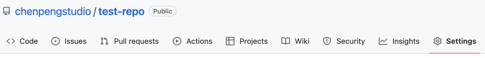
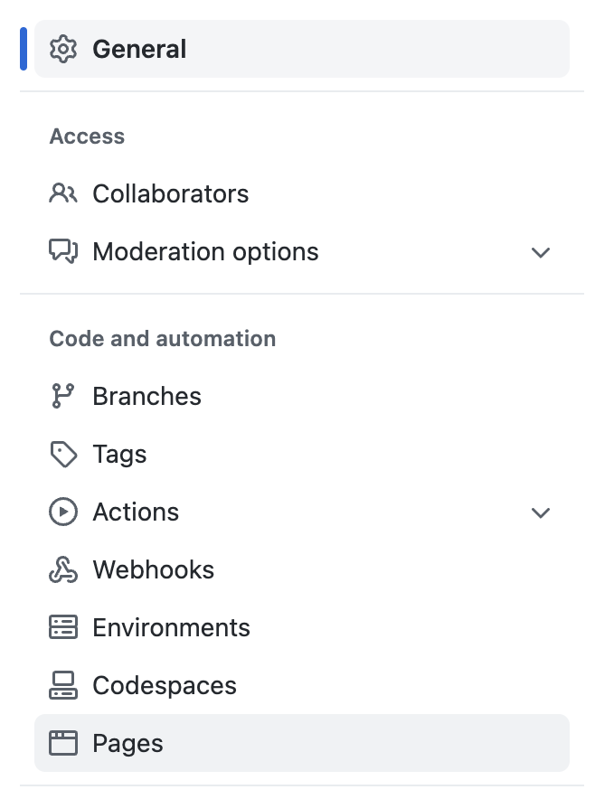

Publish You Site on GitHub Page
For Adventurers
- Home
- Get Started:
a step-by-stey guide to your first webpage - HTML Tags and CSS Rules:
a cheatsheet - Publish on GitHub (for Adventurers)
Takeaway
This page include some commonly used HTML tags and CSS rules that you will fine helpful.
Tip
If you want to learn more, check out the GitHub documentation.
- Create a free GitHub account on https://www.github.com
- Sign in to GitHub, and create a repository (repo; a project folder) by clicking “+” at the top-left corner. Don’t change any default settings.
- On the Quick Setup page after creating the repository, click the link uploading an existing file
- Upload files of your webpage (
.html,.css, and images). - Click Commit Changes. Your new repo has some files now.
- Click Setting in the navigation bar under your repo name 
- Click Pages on the left in the Code and automation section 
- On the right, you will see GitHub Page, make sure Souce is Deploy from a branch
- Under the Branch subsection, click the drop-down (shown as None above), and select main and / (root), respectively. Save!
- Open a new browser window/tab, type in the web URL of your published page:
https://www.<YOUR GITHUB USER NAME>.github.io/<YOUR REPO NAME>/<YOUR HTML FILE NAME>